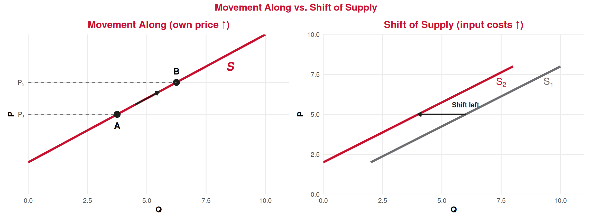

Producer Theory
Lecture 13: The Seller’s Supply Rule — Price = Marginal Cost
Recap: Lecture 12 ⏪
What we covered last time:
- Shutdown rule: Operate if \(P \geq AVC\); shut down if \(P < AVC\)
- Breakeven price = \(ATC_{\min}\) (zero economic profit)
- Shutdown price = \(AVC_{\min}\) (below this, stop producing)
- The firm’s supply curve = the MC curve above AVC
. . .
🎯 Today: We formalize the seller’s supply rule and explore what makes the supply curve shift.
👉 The supply rule is the producer’s equivalent of the demand curve we derived in Lecture 8!
The Seller’s Supply Rule
The Cost-Benefit Principle Applied to Firms ⚖️
The Seller’s Supply Rule
A profit-maximizing firm in perfect competition should produce at the level of output where:
\[\text{Price} = \text{Marginal Cost} \qquad (P = MC)\]
on the rising portion of the MC curve, provided \(P \geq AVC\).
Why? The cost-benefit principle (from Lecture 3!) applied to each unit:
- The benefit of producing one more unit = the revenue it brings = \(P\)
- The cost of producing one more unit = \(MC\)
👉 Keep producing as long as \(P \geq MC\). Stop when the next unit would cost more than it earns.
This is just marginal analysis — the same logic we’ve used since the very beginning of the course!
The Rule in Action: Step by Step 👣
The bottle factory (from the textbook): P = €0.35/bottle, FC = €40/day
| Going from → to | Extra bottles | Revenue per bottle (MR = P) | MC per bottle | MR vs MC | Decision |
|---|---|---|---|---|---|
| 0 → 100 | 100 | €0.35 | €0.10 | MR > MC | ✅ Produce |
| 100 → 200 | 100 | €0.35 | €0.10 | MR > MC | ✅ Produce |
| 200 → 300 | 100 | €0.35 | €0.20 | MR > MC | ✅ Produce |
| 300 → 400 | 100 | €0.35 | €0.30 | MR > MC | ✅ Produce |
| 400 → 500 | 100 | €0.35 | €0.40 | MR < MC | ❌ Stop! |
Source: Course textbook (sebenta), Table 10
👉 Optimal output: Q* = 400 bottles/day. At Q = 400, the MC of the next batch (€0.40) exceeds the price (€0.35), so expanding further would reduce profit.
💡 At Q = 300, MC = €0.20 < P = €0.35 — there’s still €0.15/bottle of “profit margin” to capture. That’s why the firm doesn’t stop at 300!
Why “Rising Portion” Matters ⚠️
MC is U-shaped — it may intersect the price line twice. Which intersection is correct?
At Q₁ (falling MC): if you produce one more unit, MC is still falling — you can increase profit further! At Q* (rising MC): producing one more unit would cost more than the price. This is the true optimum.
The Supply Rule: Formal Summary 📋
The Complete Supply Rule for a Competitive Firm
- Find \(Q^*\) where \(P = MC\) on the rising portion of MC
- If \(P \geq AVC\) at \(Q^*\) → supply \(Q^*\) units
- If \(P < AVC\) at \(Q^*\) → supply 0 units (shut down)
The individual supply curve is the MC curve above AVC_min.
This rule answers three questions at once:
| Question | Answer |
|---|---|
| How much to produce? | Where \(P = MC\) (rising portion) |
| Whether to produce? | Only if \(P \geq AVC\) |
| How much profit? | \(\pi = (P - ATC) \times Q^*\) |
👉 One rule, three answers — that’s the power of marginal analysis!
What Happens When Costs Change?
The Textbook’s Key Insight: Changing the Price 📈
The textbook shows what happens when the bottle price rises from €0.35 to €0.45:
| Q (bottles/day) | MC per bottle | Profit at P=€0.35 | Profit at P=€0.45 |
|---|---|---|---|
| 0 | — | −40 | −40 |
| 100 | 0.10 | −15 | −5 |
| 200 | 0.10 | 10 | 30 |
| 300 | 0.20 | 25 | 55 |
| 400 | 0.30 | 30 | 70 |
| 500 | 0.40 | 25 | 75 |
| 600 | 0.50 | 10 | 70 |
| 700 | 0.60 | −15 | 55 |
Source: Course textbook (sebenta), Tables 10 & 11
- At P = €0.35: Q* = 400 (MC ≈ 0.30, next batch MC = 0.40 > P)
- At P = €0.45: Q* = 500 (MC ≈ 0.40, next batch MC = 0.50 > P)
👉 Higher price → produce more → earn more profit. The firm moves up along its MC/supply curve.
The Textbook’s Key Insight: Changing Wages 💰
What if wages rise from €10/hour to €12/hour (keeping P = €0.35)?
| Q | LC at €10/hr | LC at €12/hr | TC (w=10) | TC (w=12) | Profit (w=10) | Profit (w=12) |
|---|---|---|---|---|---|---|
| 0 | 0 | 0 | 40 | 40 | −40 | −40 |
| 100 | 10 | 12 | 50 | 52 | −15 | −17 |
| 200 | 20 | 24 | 60 | 64 | 10 | 6 |
| 300 | 40 | 48 | 80 | 88 | 25 | 17 |
| 400 | 70 | 84 | 110 | 124 | 30 | 16 |
| 500 | 110 | 132 | 150 | 172 | 25 | 3 |
Source: Course textbook (sebenta), Tables 10 & 12
- At w = €10/hr: Q* = 400, max profit = €30
- At w = €12/hr: Q* = 300, max profit = €17
👉 Higher wages → MC rises at every Q → firm produces less at the same price. The supply curve has shifted left!
Visualizing a Supply Shift 🔄

Does Changing Fixed Costs Shift Supply? 🔒
The textbook also shows: when FC rises from €40 to €70 (price stays at €0.35):
- Q* stays at 400! The profit-maximizing quantity doesn’t change.
- Profit drops from €30 to €0, but the production decision is unchanged.
. . .
Fixed Costs Do Not Shift the Supply Curve in the Short Run
MC depends only on variable costs. Since FC doesn’t affect MC, it doesn’t change the \(P = MC\) intersection, and the supply curve stays in the same position.
FC affects profit (and the shutdown/exit decision in the long run), but not the quantity supplied at each price.
👉 Movement along the supply curve: caused by a change in the product’s own price
👉 Shift of the supply curve: caused by a change in input prices (wages, materials), technology, or number of firms
Supply Curve Shifters
What Shifts the Supply Curve? 🔄
Shift RIGHT (increase in supply) ➡️
More is supplied at every price when:
- 📉 Input prices fall (cheaper labor, fuel, materials)
- ⚙️ Technology improves (online booking systems, automation)
- 🌡️ Favorable conditions (good weather for agriculture, tourism)
- ➕ More firms enter the market
- 🏛️ Government subsidies or reduced regulation
Tourism: New low-cost airline tech → cheaper flights → supply of flights shifts right
Shift LEFT (decrease in supply) ⬅️
Less is supplied at every price when:
- 📈 Input prices rise (higher wages, energy costs)
- 🚫 Regulation increases (stricter licensing, environmental rules)
- ⚠️ Adverse events (natural disaster, pandemic)
- ➖ Firms exit the market
- 🧾 Higher taxes on producers
Tourism: New tourist tax → higher costs for hotels → supply shifts left
Movement Along vs Shift: Supply Edition 🔍

Left: When the product’s own price rises, the firm moves along its supply curve → \(Q\) increases.
Right: When input costs rise (wages, energy), the entire supply curve shifts left → less supplied at every price.
💡 Exactly the same logic as demand (Lecture 8): own-price = movement along; other factors = shift!
Tourism Applications
Supply Shifts in Portuguese Tourism 🇵🇹
Example 1: Minimum wage increase 💰
Portugal’s minimum wage has been rising. For tourism businesses:
- Labor is a major variable cost (housekeeping, waitstaff, guides)
- Higher wages → MC shifts up → supply shifts left
- At the same hotel room price, fewer rooms are profitably offered
- Some marginal businesses may shut down (\(P < AVC\) at new costs)
Effect: fewer beds at every price level, or higher prices to compensate
Example 2: Online booking technology 💻
Platforms like Booking.com, Airbnb:
- Reduce distribution costs (no need for travel agents)
- Lower marketing costs per booking
- MC shifts down → supply shifts right
- More accommodation available at every price point
Effect: more rooms at every price level — which has been the trend!
. . .
👉 Both examples change variable costs, which shifts MC and therefore the supply curve.
Supply Shifts: Seasonal Staffing in the Algarve ☀️
Why is the supply of tourism services different in summer vs winter?
The \(P = MC\) rule explains it:
☀️ Summer:
- Abundant seasonal workers → wages moderate
- MC is relatively low for extra services
- Supply curve is further right
- More tours, restaurants, activities offered
❄️ Winter:
- Workers move to other sectors → must pay more to retain
- Energy costs higher (heating)
- MC is higher for the same services
- Supply curve shifts left
- Fewer services offered
. . .
💡 Combined with demand shifts: In summer, both supply and demand are higher. In winter, both shift left. The net effect on price depends on which shift is larger — this is market equilibrium (Lecture 17)!
The Parallel with Demand 🤝
Throughout the course, we’ve built mirror-image tools for consumers and producers:
| Concept | Consumer (Demand) | Producer (Supply) |
|---|---|---|
| Goal | Maximize utility | Maximize profit |
| Constraint | Budget (\(M\)) | Cost structure (\(TC\)) |
| Individual curve | From utility maximization | From \(P = MC\) (above AVC) |
| Curve shape | Downward-sloping 📉 | Upward-sloping 📈 |
| Movement along | Own price changes | Own price changes |
| Shift | Income, preferences, other prices | Input costs, technology, # firms |
| Surplus | Consumer surplus (area below D, above P) | Producer surplus (next lecture!) |
| Market curve | Horizontal sum of individual D | Horizontal sum of individual S |
Summary 📝
Today’s Key Takeaways:
- The seller’s supply rule: Produce where \(P = MC\) on the rising portion of MC, provided \(P \geq AVC\)
- This follows directly from the cost-benefit principle — produce as long as \(P \geq MC\)
- The rule answers three questions: how much, whether, and how profitable
- Higher product price → movement along the supply curve (more produced)
- Higher input costs (wages, energy) → MC shifts up → supply curve shifts left
- Better technology → MC shifts down → supply curve shifts right
- Fixed costs don’t shift supply in the short run (they don’t affect MC)
- Supply and demand are mirror images — built from the same marginal analysis logic
Connection: We now have the individual firm’s supply curve. Next lecture: producer surplus and how to build the market supply from individual firms.
Next (Lecture 14, April 9): Producer Surplus, Market Supply, and Linear Supply 📈
Exercises
Practice Time! ✏️
The supply rule, cost changes, and supply shifts.
Exercise 1: Multiple Choice
Question: A sardine restaurant in Lisbon operates in a competitive market. Currently, \(P = €12\) per meal and \(MC = €10\) at the restaurant’s current output level. The restaurant should:
A. Keep output the same — it is already maximizing profit
B. Increase output — producing more will add to profit
C. Decrease output — the restaurant is overproducing
D. Shut down — it is not covering costs
Answer: B
Since \(P = €12 > MC = €10\), each additional meal earns €12 in revenue but costs only €10. The restaurant should expand output until MC rises to meet \(P = €12\). At the current output, there is still “room” to increase profit by producing more.
Only when \(P = MC\) should the firm stop expanding.
Exercise 2: Multiple Choice
Question: The Portuguese government introduces a new tourist tax of €2 per hotel night, paid by the hotel. Which of the following is correct?
A. The hotel’s supply curve shifts right by €2
B. The hotel’s supply curve shifts left (up by €2) — at each price, less is supplied
C. The hotel moves along its existing supply curve
D. The hotel’s demand curve shifts left
Answer: B
The tax increases the variable cost of each room-night by €2. This shifts MC up by €2 at every output level, which means the supply curve shifts left (equivalently, upward by €2).
At any given market price, the hotel now produces less because \(P = MC\) is reached at a lower quantity. This is a shift of supply, not a movement along it (C is wrong), because the change is in costs, not the product’s own price. And it’s the supply curve, not demand (D is wrong).
Exercise 3: Open Question ✍️
A small boat tour company in Cascais faces the following situation. The market price for a coastal tour is €40 per ticket. The firm’s cost structure is:
| Tours/day (Q) | FC (€) | VC (€) | TC (€) | MC (€/tour) |
|---|---|---|---|---|
| 0 | 300 | 0 | 300 | — |
| 1 | 300 | 15 | 315 | 15 |
| 2 | 300 | 28 | 328 | 13 |
| 3 | 300 | 39 | 339 | 11 |
| 4 | 300 | 52 | 352 | 13 |
| 5 | 300 | 70 | 370 | 18 |
| 6 | 300 | 96 | 396 | 26 |
| 7 | 300 | 133 | 433 | 37 |
| 8 | 300 | 184 | 484 | 51 |
Hypothetical illustrative example
a) Using the \(P = MC\) rule, what is the profit-maximizing output at \(P = €40\)? Calculate profit.
b) Now fuel costs rise, adding €10 to the MC of each tour. Write the new MC column. What is the new profit-maximizing output? Calculate the new profit.
c) Has the supply curve shifted or has the firm moved along it? Explain.
d) At the original cost structure, what is the lowest price at which this firm would still produce? (What is the shutdown price?)
e) Draw (describe) what the firm’s supply curve looks like: at what price does it “start,” and what does it follow?
Exercise 3: Solution — Part a
a) Apply \(P = MC\) on the rising portion:
| Q | MC | P vs MC |
|---|---|---|
| 3 | 11 | P = 40 > MC → produce |
| 4 | 13 | P = 40 > MC → produce |
| 5 | 18 | P = 40 > MC → produce |
| 6 | 26 | P = 40 > MC → produce |
| 7 | 37 | P = 40 > MC → produce |
| 8 | 51 | P = 40 < MC → stop! |
Q* = 7 tours/day (last tour where \(P \geq MC\)).
Profit: \(\pi = TR - TC = (40 \times 7) - 433 = 280 - 433 = -€153\)
The firm makes a loss of €153/day. But should it still operate? AVC at Q = 7: \(\frac{133}{7} = €19\). Since \(P = €40 > AVC = €19\): yes, operate! Shutdown loss would be −€300 (= FC), which is worse.
Exercise 3: Solution — Parts b & c
b) New MC = old MC + €10:
| Q | Old MC | New MC | P = 40 vs New MC |
|---|---|---|---|
| 1 | 15 | 25 | 40 > 25 → produce |
| 2 | 13 | 23 | 40 > 23 → produce |
| 3 | 11 | 21 | 40 > 21 → produce |
| 4 | 13 | 23 | 40 > 23 → produce |
| 5 | 18 | 28 | 40 > 28 → produce |
| 6 | 26 | 36 | 40 > 36 → produce |
| 7 | 37 | 47 | 40 < 47 → stop! |
New Q* = 6 tours/day (down from 7).
New VC at Q = 6: old VC + 6 × €10 = €96 + €60 = €156. New TC = 300 + 156 = €456.
New profit: \(\pi = (40 \times 6) - 456 = 240 - 456 = -€216\) (loss worsened from −€153 to −€216).
c) This is a shift of the supply curve, not a movement along it. The price didn’t change (still €40) — what changed was the input cost (fuel). Higher variable costs shift MC upward, which shifts the supply curve left. At the same price, the firm now supplies fewer tours (6 instead of 7).
Exercise 3: Solution — Parts d & e
d) The shutdown price = \(AVC_{\min}\).
Calculate AVC at each Q:
| Q | VC | AVC = VC/Q |
|---|---|---|
| 1 | 15 | 15.00 |
| 2 | 28 | 14.00 |
| 3 | 39 | 13.00 |
| 4 | 52 | 13.00 |
| 5 | 70 | 14.00 |
| 6 | 96 | 16.00 |
Shutdown price = \(AVC_{\min}\) = €13 (at Q = 3–4). Below €13, the firm should produce nothing.
e) The firm’s supply curve:
- For \(P < €13\): Q = 0 (shut down)
- For \(P \geq €13\): follow the MC curve on its rising portion (starting around Q = 3–4)
- As P rises, Q* increases: e.g., P = 18 → Q = 5, P = 26 → Q = 6, P = 37 → Q = 7, etc.
The supply curve starts at the shutdown point (P = €13, Q ≈ 3–4) and follows MC upward.
Next Lecture
April 9, 2026: Producer Surplus, Market Supply, and Linear Supply 📈
. . .
We’ll introduce producer surplus (the supply-side mirror of consumer surplus), build market supply from individual firms, and work with linear supply equations.
Thank You!
Questions? 🙋
📧 paulo.fagandini@ext.universidadeeuropeia.pt
Next class: Wednesday, April 9, 2026
This lecture formalizes the P = MC supply rule that has been building across Lectures 10–12. The textbook examples (bottle factory) ground the abstract rule in familiar numerical territory. The key new content is supply shifters — students need to distinguish clearly between movements along the supply curve (own price) and shifts (input costs, technology). The parallel table with demand concepts helps students see the symmetry. The exercise includes a fuel cost increase that shifts MC, giving students practice with the difference between movement and shift.